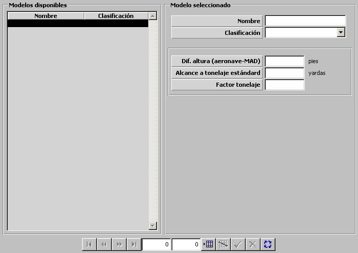

MAD

Descripción de los parámetros:
Diferencial de Altura (aeronave-MAD): Este parámetro determina la altura por debajo de la aeronave a la que va suspendido el MAD. Esta altura es tenida en cuenta para determinar si una unidad se encuentra o no dentro del alcance del MAD. Si la altura de la aeronave con el MAD encendido es inferior a este diferencial de altura, el MAD resultará dañado.
Unidades: pies
Rango: 0 – 999
Alcance a Tonelaje Estándar: Este parámetro representa el alcance del MAD para contactos de desplazamiento igual a 1500 toneladas. Se trata de un alcance básico a partir del cual se calcula el alcance del MAD para cualquier contacto, teniendo en cuenta su desplazamiento.
Unidades: yardas
Rango: 0 – 99999
Factor Tonelaje: Este parámetro es tenido en cuenta por el modelo de MAD para calcular el alcance. Factor que modela la dependencia del alcance del MAD con el desplazamiento del contacto.
Unidades: ---
Rango: 1,00 – 2,00
Ejemplo:
Para un desplazamiento del contacto doble a 1500 toneladas:
Si Factor Tonelaje = 1 ⇒ Alcance MAD = 2 * Alcance a Tonelaje Estándar.
Si Factor Tonelaje = 1,5 ⇒ Alcance MAD = 2,5 * Alcance a Tonelaje Estándar.
Si Factor Tonelaje = 2 ⇒ Alcance MAD = 3 * Alcance a Tonelaje Estándar.
Para un desplazamiento del contacto cuádruple a 1500 toneladas:
Si Factor Tonelaje = 1 ⇒ Alcance MAD = 4 * Alcance a Tonelaje Estándar.
Si Factor Tonelaje = 1,5 ⇒ Alcance MAD = 5,5 * Alcance a Tonelaje Estándar.
Si Factor Tonelaje = 2 ⇒ Alcance MAD = 7 * Alcance a Tonelaje Estándar.